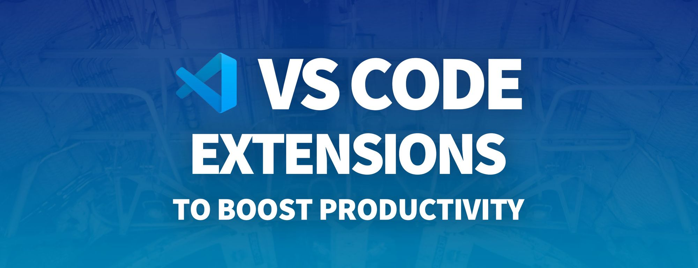
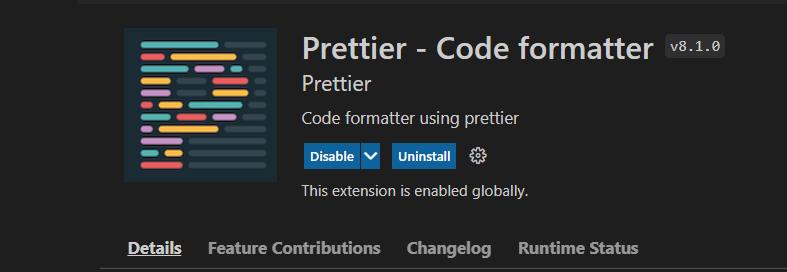
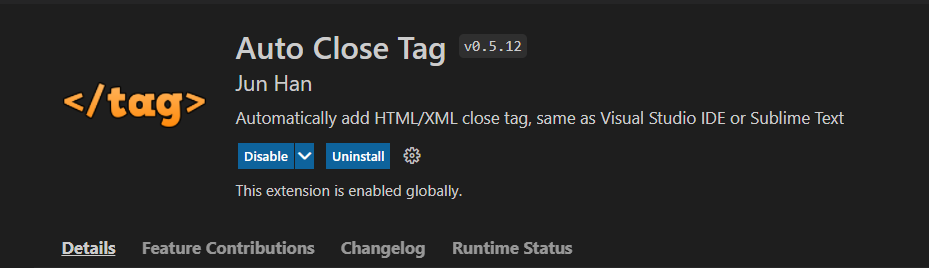
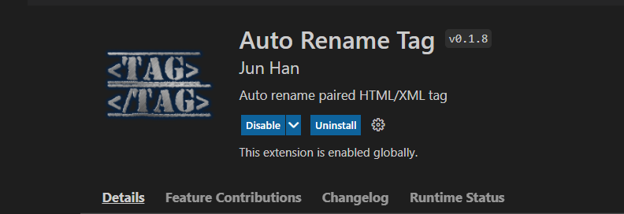
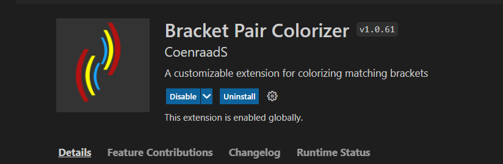
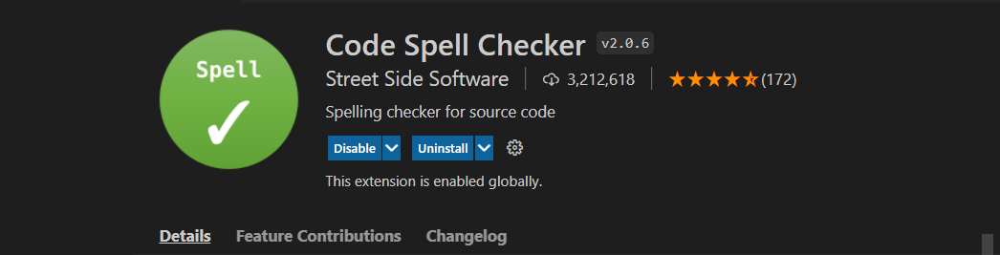

Extensions that I use in VS Code
September, 2021 Hi everyone, In this blog I will share some of my favorite VS Code Extensions that I use regularly and I would recommend everyone to use them to increase their productivity and speed up your work .
The below list of extensions can be installed in VS Code to save your
time in multiple ways.
1. Live Server
2. Prettier
3. Auto Close Tag
4. Auto Rename Tag
5. Bracket Pair Colorizer
6. Code Spell Checker

Live Server--- This extension will help you in refreshing the browser automatically whenever you make any changes in code and save it. Without this extendion you have to once save your code and then switch to browser to reload and see changes. Live server helps in saving lot of your time and high productivity.
Prettier--- Prettier will help you in modify your code in to keep its appearance consistent. You won’t waste any more time to manually formatting the code. Biggest advantage Prettier offers is that whenever you will save ,it automatically formats the code and reduce the need to pay attention to making the code look pretty.
Auto Close Tag--- It automatically add the closing bracket of the opening tag you added and then position the mouse cursor between the tags.
Auto Rename Tag--- Whenever you chnages opening tag it will automatically rename the closing tag and vice-versa and saves lot of time.
Bracket Pair Colorizer---Bracket Pair Colorizer gives the opening and closing brackets matching colors, to know which brackets belong together. In long nested codes, especially in working with Javascript, it’s almost impossible to determine which brackets matches up with each other. Using bracket pair colorizer extension helps you find the opening and closing more easily.
Code Spell Checker---Code Spell Checker is very helpful for keeping your code free of typing errors. Whether you’re good in English or not, typos are inevitable. You don’t want to spend time finding them.